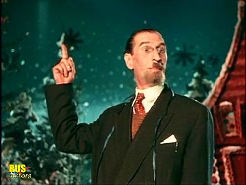

Товарищи! Товарищи, всех вас интересует вопрос: "Есть ли жизнь на Марсе?" Прошу всех взглянуть на небо! Снизу звездочки кажутся маленькие-маленькие . Но стоит только нам взять телескоп, и посмотреть вооруженным глазом, как мы уже видим две звездочки, три звездочки, четыре звездочки… Лучше всего, конечно, пять звездочек. Есть ли жизнь на Марсе, нет ли жизни на Марсе, это науке неизвестно. Наука еще пока не в курсе дела... А-ха-ха-ха... Асса!
Лектор:
